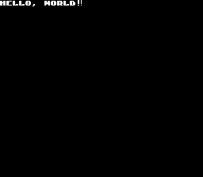

Burn
A Toolkit To Create 8-bit Flavored Application
Burn is a free and open source framework that allows you to create 8-bit flavored application using Ruby DSL.
scene do
label "Hello, World!"
end
Just like Recipe and Cookbook are DSL for Chef rubygem, this dead simple DSL is for Burn rubygem, and we call it Fuel. Burning this Fuel will produce this.

Here is another example. With Fuel DSL, you can even compose background music in 1 minute.
scene do
label "Hello, World!"
play "openning"
end
music "openning" do
tempo :allegro
channel "piano" do
segno
g :dotted
g :eighth, :staccato
a :dotted
a :eighth, :staccato
dal_segno
end
end
Check the output from this(take note that it SOUNDS).
Would you like to design retro 8-bit graphics? Burn following Fuel, and you'll get this.
declare do
star <<-EOH
11
11
1111
1111
1111111111111111
11111111111111
111111111111
1111111111
11111111
11111111
11111111
1111 1111
11 11
1 1
EOH
end
scene do
main_loop <<-EOH
star.x=20
star.y-=3
sprite "star"
EOH
end
Creating 8-bit flavored application mean neither outdated nor cheap, but good fit to rapid prototyping. It could be one of best options for education purpose as well.
Moreover, the executables built with burn will work at almost any OS(This list is helpful too). That said, consequently, burn is a multi-platform programming environment.
For more information including More Fuel DSL examples can be found at README.md on our github project page.
Wish you enjoy.